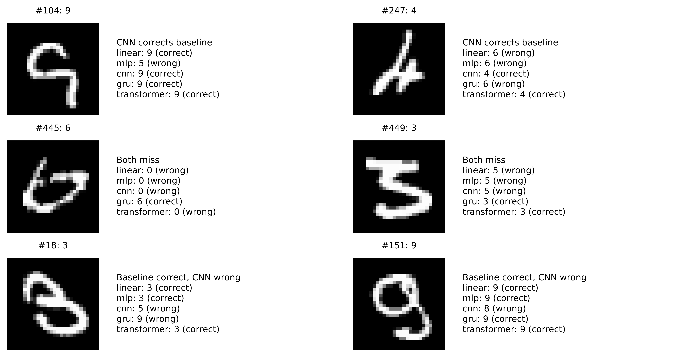
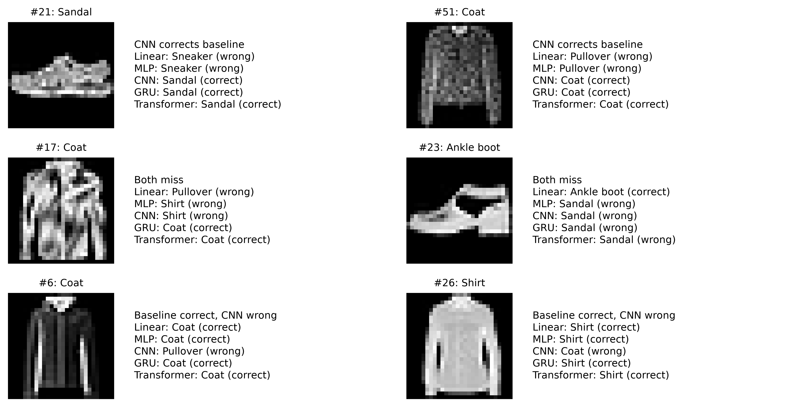
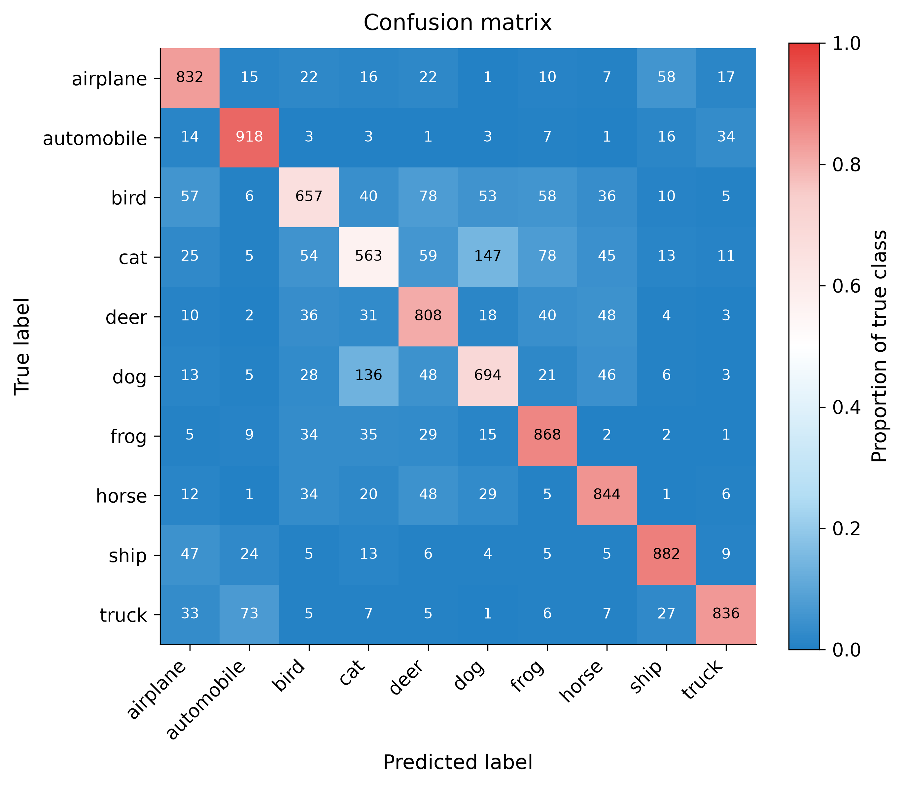
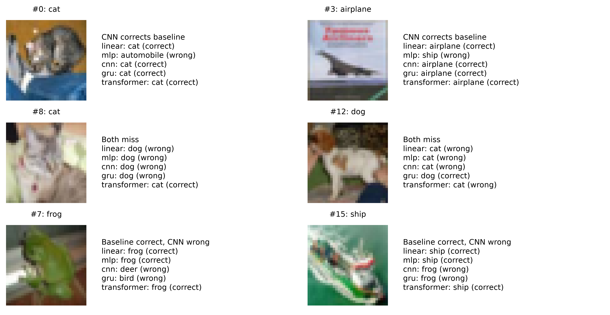

Assignment 1
Image classification
Comparing image classifiers on MNIST, Fashion-MNIST, and CIFAR-10.
Architecture, Learning, and Mistakes
How does model architecture affect accuracy, learning behavior, and mistakes across different image datasets? We compare Linear, MLP, CNN, GRU, and Transformer models on MNIST, Fashion-MNIST, and CIFAR-10. The study contains fifteen 50-epoch training runs, each with seed 42. LSTM has no saved run in this study.
Experimental Setup
MNIST and Fashion-MNIST use 28-by-28 grayscale images: 54,000 training, 6,000 validation, and 10,000 official test examples. CIFAR-10 uses 32-by-32 color images: 45,000 training, 5,000 validation, and 10,000 official test examples. A seeded random permutation reserves 10% of the official training split for validation; it is not a stratified split.
All newer runs use Adam, cross-entropy from logits, learning rate 0.001, batch size 128, and 50 epochs. Grayscale training uses random affine augmentation and normalization with mean/std 0.5. CIFAR-10 training uses random crops and horizontal flips, with per-channel mean (0.4914, 0.4822, 0.4465) and standard deviation (0.2470, 0.2435, 0.2616). Validation and test transforms are deterministic, with no augmentation. Each model uses its lowest-validation-loss checkpoint.
Linear and MLP flatten the image; MLP adds hidden layers of 256 and 128 units with ReLU and dropout 0.2. CNN uses two convolution blocks with 32 and 64 channels, batch normalization, pooling, and global average pooling. GRU scans image rows with a 128-unit custom recurrent cell. Transformer projects image rows to 128-dimensional tokens, adds sinusoidal positions, and uses two attention layers with four heads. Every encoder feeds a ten-class head.
Held-out Test Comparison
All fifteen selected checkpoints were evaluated on the corresponding official 10,000-image test split. Macro-F1 weights each class equally. Parameter counts include the encoder and classification head. Model selection uses validation loss; the table shows test performance after that selection.
| Dataset | Model | Test accuracy | Macro-F1 | Parameters | Best epoch |
|---|---|---|---|---|---|
| MNIST | Linear | 85.68% | 0.8545 | 7,850 | 28 |
| MNIST | MLP | 98.45% | 0.9844 | 235,146 | 47 |
| MNIST | CNN | 97.78% | 0.9776 | 19,562 | 45 |
| MNIST | GRU | 99.24% | 0.9923 | 61,962 | 46 |
| MNIST | Transformer | 99.31% | 0.9931 | 1,191,050 | 48 |
| Fashion-MNIST | Linear | 77.05% | 0.7694 | 7,850 | 14 |
| Fashion-MNIST | MLP | 87.18% | 0.8711 | 235,146 | 49 |
| Fashion-MNIST | CNN | 86.21% | 0.8615 | 19,562 | 48 |
| Fashion-MNIST | GRU | 89.88% | 0.8990 | 61,962 | 49 |
| Fashion-MNIST | Transformer | 90.43% | 0.9040 | 1,191,050 | 44 |
| CIFAR-10 | Linear | 35.27% | 0.3461 | 30,730 | 36 |
| CIFAR-10 | MLP | 47.67% | 0.4656 | 820,874 | 50 |
| CIFAR-10 | CNN | 63.84% | 0.6366 | 20,138 | 39 |
| CIFAR-10 | GRU | 64.24% | 0.6401 | 88,074 | 45 |
| CIFAR-10 | Transformer | 68.71% | 0.6864 | 1,199,754 | 30 |
Earlier five-epoch Fashion-MNIST baselines
These preliminary runs are retained separately and are excluded from the 50-epoch comparison and figures.
| Model | Test accuracy | Macro-F1 | Parameters |
|---|---|---|---|
| Linear | 76.12% | 0.7591 | 7,850 |
| MLP | 81.98% | 0.8154 | 235,146 |
How the Models Learn
MNIST

GRU has the lowest validation loss (0.0207, epoch 46). Its final training / validation losses are 0.0196 / 0.0240. The selected checkpoint, rather than the last epoch, supplies the test predictions.
Fashion-MNIST

Transformer has the lowest validation loss (0.2630, epoch 44). Its final training / validation losses are 0.2715 / 0.2670. The selected checkpoint, rather than the last epoch, supplies the test predictions.
CIFAR-10

Transformer has the lowest validation loss (0.9063, epoch 30). Its final training / validation losses are 0.5225 / 1.0668. The selected checkpoint, rather than the last epoch, supplies the test predictions.
CIFAR-10 Transformer validation loss reaches its minimum at epoch 30 and then rises while training loss continues downward, consistent with overfitting in this run. Fashion-MNIST CNN validation loss jumps near the end, so the final epoch is not its selected checkpoint. Training loss can exceed validation loss because training applies augmentation and dropout; that gap alone does not diagnose underfitting.
Where Accuracy Hides Failures
For each dataset, choose the flattened-pixel baseline with the lowest validation loss among Linear and MLP (ties favor Linear), then compare it with CNN. Per-class recall and row-normalized confusion matrices use the complete test split. Shared-image figures use the first two official test indices in each stated disagreement category, with predictions from all five architectures. Selection is deterministic and not based on visual appeal or confidence.
MNIST: MLP and CNN
The baseline is MLP, selected using validation loss before inspecting test errors.
| True class | MLP recall | CNN recall |
|---|---|---|
| 0 | 99.2% | 99.0% |
| 1 | 99.7% | 99.6% |
| 2 | 98.6% | 97.4% |
| 3 | 98.3% | 98.9% |
| 4 | 97.6% | 98.1% |
| 5 | 97.9% | 97.6% |
| 6 | 98.9% | 97.7% |
| 7 | 98.2% | 97.9% |
| 8 | 98.2% | 96.4% |
| 9 | 97.7% | 94.9% |



Fashion-MNIST: MLP and CNN
The baseline is MLP, selected using validation loss before inspecting test errors.
| True class | MLP recall | CNN recall |
|---|---|---|
| T-shirt/top | 84.4% | 86.7% |
| Trouser | 97.0% | 96.2% |
| Pullover | 79.8% | 86.3% |
| Dress | 87.5% | 80.3% |
| Coat | 79.7% | 67.8% |
| Sandal | 95.3% | 96.5% |
| Shirt | 62.1% | 59.6% |
| Sneaker | 93.7% | 95.8% |
| Bag | 97.1% | 97.4% |
| Ankle boot | 95.2% | 95.5% |



CIFAR-10: MLP and CNN
The baseline is MLP, selected using validation loss before inspecting test errors.
| True class | MLP recall | CNN recall |
|---|---|---|
| airplane | 52.1% | 69.8% |
| automobile | 53.9% | 80.9% |
| bird | 23.2% | 55.4% |
| cat | 36.5% | 43.2% |
| deer | 27.4% | 49.0% |
| dog | 29.0% | 52.0% |
| frog | 59.9% | 71.6% |
| horse | 62.3% | 73.3% |
| ship | 67.9% | 74.8% |
| truck | 64.5% | 68.4% |





Confident mistakes show that high confidence can accompany an error. They do not establish poor calibration; this study does not measure calibration error or include a reliability diagram.
Connecting Errors to Fashion-MNIST
Class means and prototype similarity motivate inspecting Shirt, Coat, and Pullover recall and confusion. Similar average silhouettes are descriptive evidence about the data; they do not establish that flattening caused an error. The paired comparisons above show how these particular models differ.


Accuracy and Model Size
On MNIST, CNN changes test accuracy by -0.67 percentage points relative to the validation-selected MLP baseline, with 19,562 versus 235,146 trainable parameters. This describes these configurations and seed, rather than an architecture-wide advantage.
On Fashion-MNIST, CNN changes test accuracy by -0.97 percentage points relative to the validation-selected MLP baseline, with 19,562 versus 235,146 trainable parameters. This describes these configurations and seed, rather than an architecture-wide advantage.
On CIFAR-10, CNN changes test accuracy by +16.17 percentage points relative to the validation-selected MLP baseline, with 20,138 versus 820,874 trainable parameters. This describes these configurations and seed, rather than an architecture-wide advantage.
The table supports comparisons of accuracy and parameter count, which is a measure of model size rather than compute cost. Training durations lack a verified common hardware record. Evaluation timings are single passes without a benchmark protocol, so we do not rank training or inference speed.
Limits and Reproduction
These are single-seed observations with fixed configurations. Architecture, parameter count, augmentation response, and optimization behavior vary together; the study does not isolate a causal architectural effect or estimate variability across seeds. MNIST is a development dataset. LSTM results and repeated-seed comparisons remain absent.
Per-run test metrics and error summaries are saved under results/a1/. Evaluation also saves local prediction tensors as test_evidence.pt; these are excluded from Git and must be regenerated from checkpoints. The comparison table and selected sample indices are saved as comparison_full_test.csv and comparison_selection.json.
From the repository root, evaluate each dataset/model configuration, then regenerate the comparison tables and figures:
python -m scripts.evaluation.evaluate --data fashion_mnist --config configs/image_classification/fashion_mnist/cnn.yaml
# Repeat for each of the five models on all three datasets.
python -m scripts.evaluation.compare --results-dir results/a1 --epochs 50 \
--figures-dir web/images/comparison/a1Links
- Source code: GitHub repository
- Checkpoint reconstruction: Reproduction commands
- Draft report: Assignment 1 draft
- Slides: (Required for final)
- YouTube presentation: (To be added)
Group members
| Full name | Student ID | Role in Assignment 1 |
|---|---|---|
| Vu Duc Viet Anh | 2352074 | Website and UI · Training pipeline · LSTM model |
| Tran Lam Anh | 2352067 | Data loader, preprocessing and EDA · Transformer model · Metrics |
| Le Nguyen Khang | 2352470 | Error analysis · GRU model · Shared utilities · Review |
| Tran Nguyen Giap | 2352284 | Linear, Recurrent and CNN models · Evaluation pipeline |